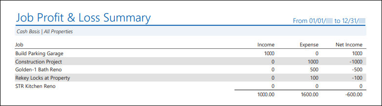
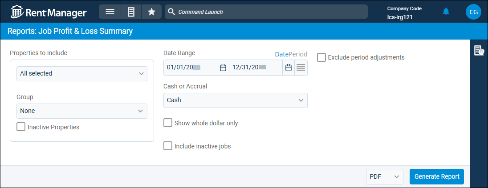

Source: https://rmxhelp.rentmanager.com/Topics/Express/Other/Reports/Job-Profit-Loss-Summary.htm
Job Profit & Loss Summary (Report)
The Job Profit & Loss Summary report displays the total income and expenses of all jobs during a selected date range in rows, allowing users to compare the net income for each job row-by-row.
Related Privileges
| Group | Privilege | Column |
|---|---|---|
| Letter/Email Templates/Reports/Packets | Run reports | Enabled |
| Run accounting reports | Enabled |
Additionally, on the Reports tab, you must have access to Job Profit & Loss Summary.
For more information, refer to Control User Access.
To view the Job Profit & Loss Summary report, do the following:
-
Go to
 arrow_forward Accounting arrow_forward Job Costing arrow_forward Job Profit & Loss Summary.
arrow_forward Accounting arrow_forward Job Costing arrow_forward Job Profit & Loss Summary.
The Reports: Job Profit & Loss Summary page displays. -
Adjust the report options as desired. Each option is described below.
-
Generate the report in your desired file format(s).
Related Preferences
Reports may look different depending on whether or not the Use modernized report style system preference is enabled. For more information, refer to General Report Options (System Preferences).

Report Options
The report options described below determine what data displays in the report.

Properties to Include
Select each property or a property Group to be included in the report.
More Information
This field populates only with the properties to which you have access. Your access to properties can be managed from your user account or on the property's details page. For more information, refer to Limit Access to a Property.
Optionally, check Show Inactive Properties to include properties that are no longer active.
Date Range
Enter or select the date range to determine the data that displays in the report.
To the right of the Date Range option, you can click Date to manually select a date range, or Period select a date range based on accounting periods.
Set a Date Range
In the Date Range section, set the From and To dates for which the report should examine data.
These fields automatically populate with today’s date. Enter a different date or select a date from the calendar. Alternatively, adjust the dates using the available preset buttons or click  to open more options for setting a date range.
to open more options for setting a date range.
Select an Accounting Period
Related Preferences
To generate the report using accounting periods, the General Ledger Settings (System Preferences) option to Enable accounting periods must be enabled.
Financial reports default to the manual Date view unless the General Ledger Settings (System Preferences) option to Default to accounting periods for financial reports is checked. Enabling this option sets the financial reports to default to the Period view for Date Range.
Configure the following options to determine the period Date Range uses:
| Option | Description |
|---|---|
|
Series |
Select the desired series, as defined in accounting periods. |
|
Single Period |
Select Single Period to generate the report for one accounting period. When this option is selected, you can also select the Year of the period you wish to use and the Period, which allows you to generate the report from the period's Start Date through the period's End Date. |
|
Multiple Periods |
Select Multiple Periods to generate the report across multiple accounting periods. When this option is selected, you can also select a Start Year and End Year or a Start Period and End Period to determine the To and From date for which the report is generated. |
Cash or Accrual
This option determines whether the financial activity is calculated on a cash or accrual basis.
| Option | Description |
|---|---|
|
Accrual |
Includes all transactions for which income was earned and expenses were incurred, regardless of whether the payment was received or disbursed. |
|
Cash |
Includes only transactions for which payments are received or made. |
Show Whole Dollar Only
If checked, general ledger account totals are rounded to the nearest whole dollar (0–49 cents is rounded down, and 50–99 cents is rounded up). Otherwise, the actual amount displays.
Include Inactive Jobs
Check to include jobs that do not have Active checked on the job details page in the report results.
More Information
The report includes a row for every active job in your database, as well as inactive if the Inactive Jobs report option is checked, regardless of property and date range selection. This is because jobs are not required to be connected to a property, and for complete data to display, jobs without a property link need to be included.
Exclude Period Adjustments
Check to remove any journal entries marked as a Period Adjustment from the report results.
Report Results
The report results are described below including, if applicable, section, column, and subreport descriptions.
Report Header
The report header displays the report name and key information selected in the report options, such as date information and which properties were examined in the report.
Column Descriptions
The columns that display in the report are described below.
| Column | Description |
|---|---|
|
Job |
The name of each job included in the report. |
|
Income |
The total of all income transaction activity that took place for the job during the selected date range. |
|
Expense |
The total of all expense transaction activity that took place for the job during the selected date range. |
|
Net Income |
The net income of each job within the selected date range. Net Income is calculated by using the following formula: Net Income = Income - Expense |